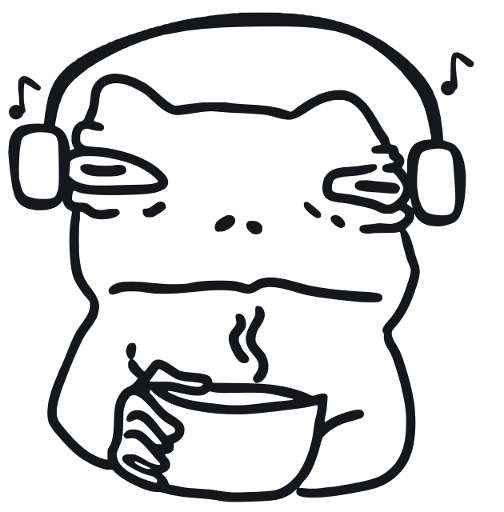

[DÍA DD/MM · HH a HH]
[nombre del evento]
[Descripción corta: quién toca o guía, qué incluye, si hay cupo.]
Los cupos se reservan por WhatsApp y todo se anuncia primero en Instagram.


La rana se tomó una siesta. Seguinos en Instagram y te enterás del próximo antes que nadie.
ya pasó ya pasó
ya pasó